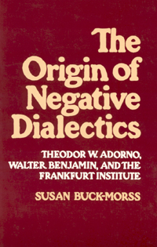
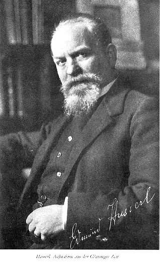
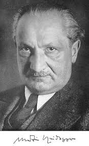
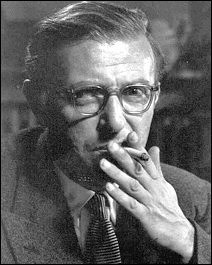
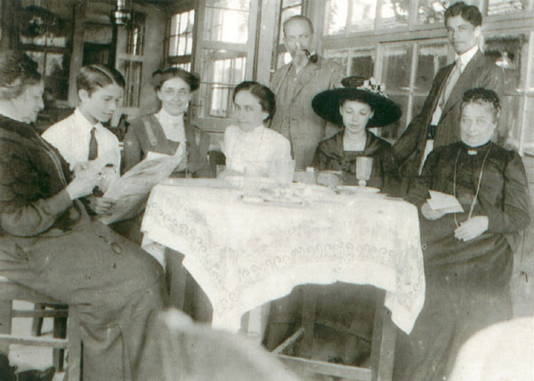

Note on The Origin of Negative Dialectics
The Origin of Negative Dialectics: Theodor W. Adorno, Walter Benjamin and the Frankfurt School (New York, 1977) was my dissertation. It is the first, and only one of my books that was published without images (not even on the cover). Also relevant is the fact that I was only beginning to become involved in the feminist movement – hence the paucity of references to women in the text, which essentially concerns dead white males.

Book cover
The images in this constellation are those that now in retrospect I think should have been included: portraits of the men; the women in their lives; Sartre’s chestnut tree that explains the uniqueness of Adorno’s understanding of materialism as concrete and particular: particular things can burn up (see The Concrete Particular) and a final image that reminds us that books can be held in the hands of readers as the world and its trees are destroyed about them.
Free downloads from The Origin of Negative Dialectics can be found on this website (see Books)
Adorno as child
Theodor W.Adorno (1903-1969)

Edmund Husserl

Martin Heidegger

Paul Sartre
Gretel Adorno

Husserl’s Family
Hannah Arendt
Simone de Beauvooir, 1945, photo by Cartier Bresson
Angela Davis
Judith Butler receives Adorno Prize in 2012
Chestnut tree
Burning tree
Reading as world is destroyed